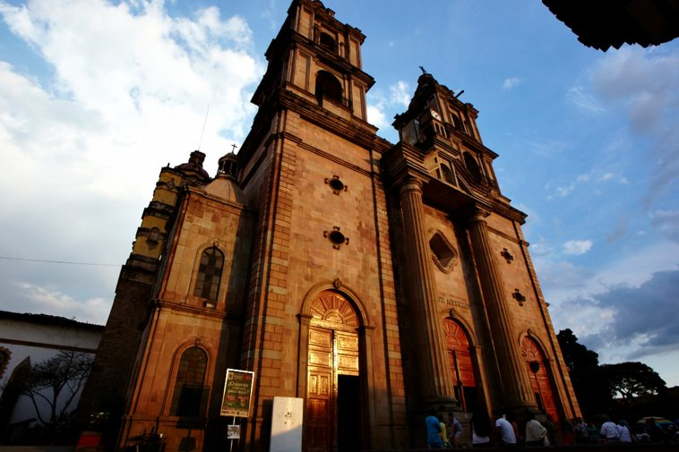
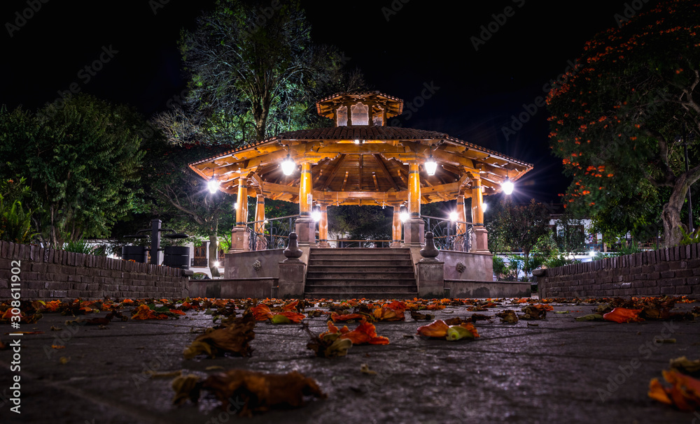
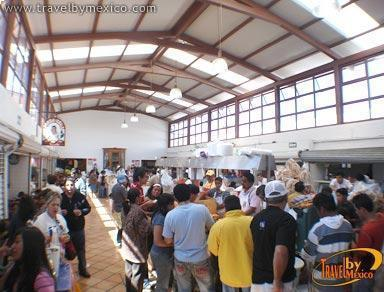

Se encuentra junto a la Plaza Independencia, en el centro histórico de Valle de Bravo. Es uno de los edificios religiosos más importantes del municipio y destaca por sus torres, campanarios y arquitectura histórica.
Este lugar es atractivo para quienes disfrutan de la historia, la arquitectura y las tradiciones.

Kiosco considerado el corazón de Valle de Bravo, se encuentra ubicado en medio de la plaza principal, rodeado de áreas verdes bancas de descanso ideal para pasar un momento y disfrutar de uno de los centros turísticos de Valle de Bravo.
Este lugar es atractivo para quienes disfrutan de la historia, la arquitectura y las tradiciones, ya que a su alrededor se encuentran casas con techos de tejas y carreteras con empedrado.

Se encuentra en la calle Independencia, en la zona centro, y cuenta con diferentes puestos donde se ofrecen alimentos, productos frescos y platillos preparados de manera tradicional.
Entre los alimentos que puedes encontrar destacan las quesadillas, tacos, barbacoa, carnitas, cecina, sopitos, pambazos y otros antojitos mexicanos. También puedes disfrutar de pan tradicional, frutas y verduras frescas. Es un sitio ideal para conocer los sabores de la región y experimentar el ambiente cotidiano de sus habitantes.